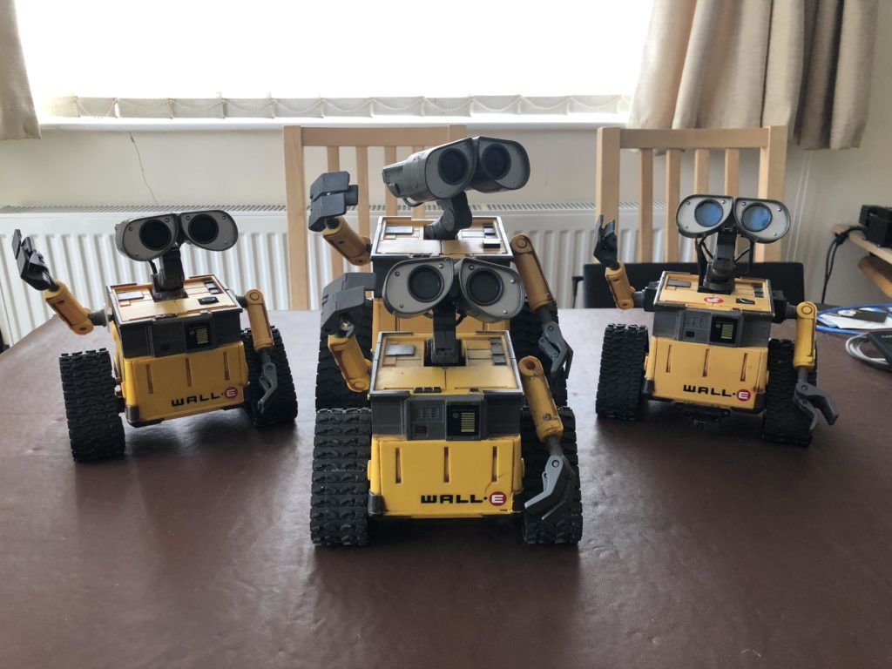

Képzési témák:
Robotika alapjai:
Ez a tantárgy átfogó bevezetést nyújt a robotika világába. A hallgatók megismerik a robotika alapfogalmait, történetét és fejlődését, valamint megérthetik, hogyan működnek és hogyan épülnek fel a robotok.
Robotok tervezése és programozása:
A tantárgy során a hallgatók megismerkednek a robotok tervezésének és programozásának alapjaival. Tanulmányozzák a robotikai rendszerek összeállítását, szenzorok és aktuátorok kezelését, valamint a robotok mozgásának és viselkedésének programozását.
Gyakorlati alkalmazások és jövőbeli trendek:
A tantárgy végén a hallgatók lehetőséget kapnak arra, hogy megismerjék a robotika számos gyakorlati alkalmazását és jövőbeli trendjeit különböző területeken, például iparban, egészségügyben, otthoni automatizálásban és űrkutatásban. Emellett megvitathatják a robotika társadalmi, gazdasági és etikai kihívásait is, amelyekkel a technológia fejlődése járhat.
